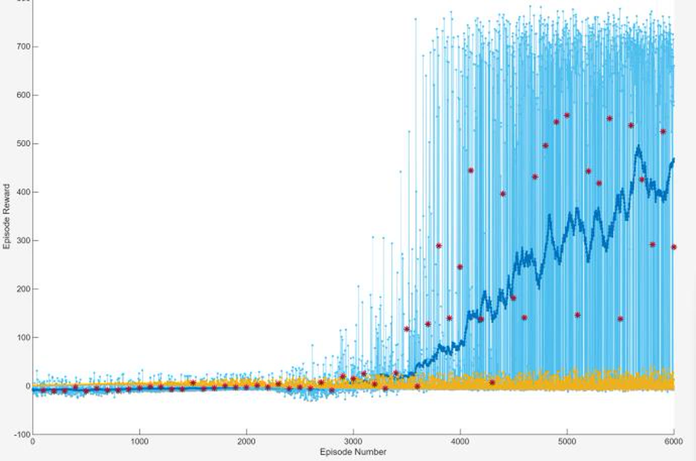
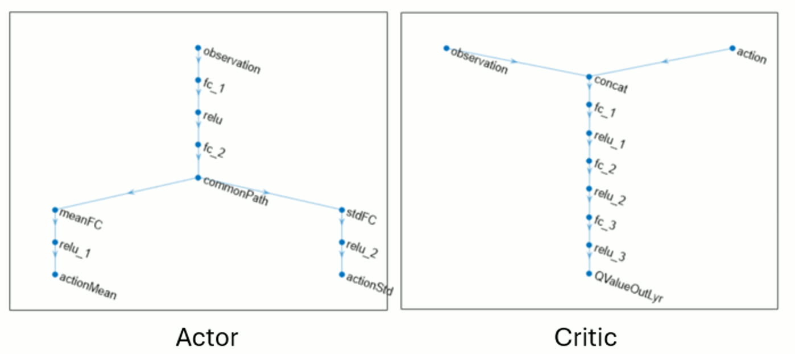
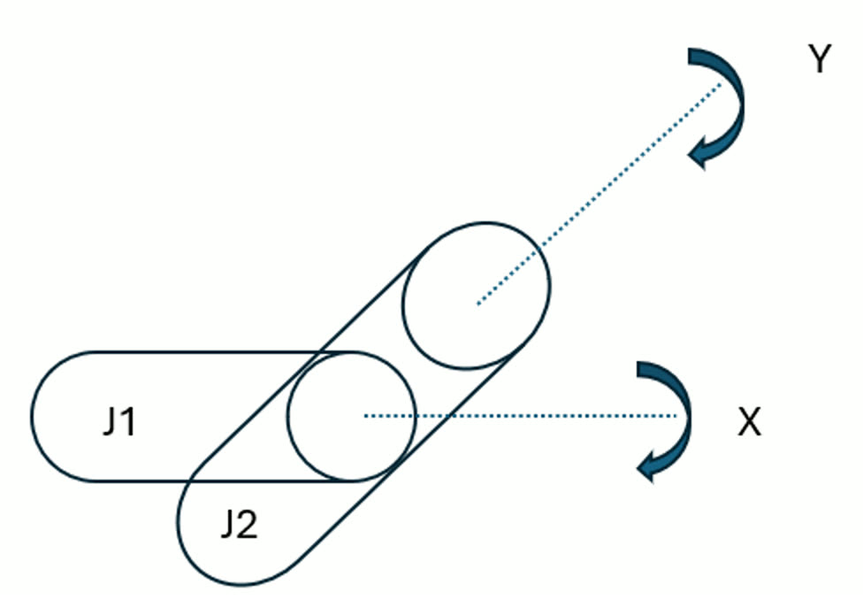
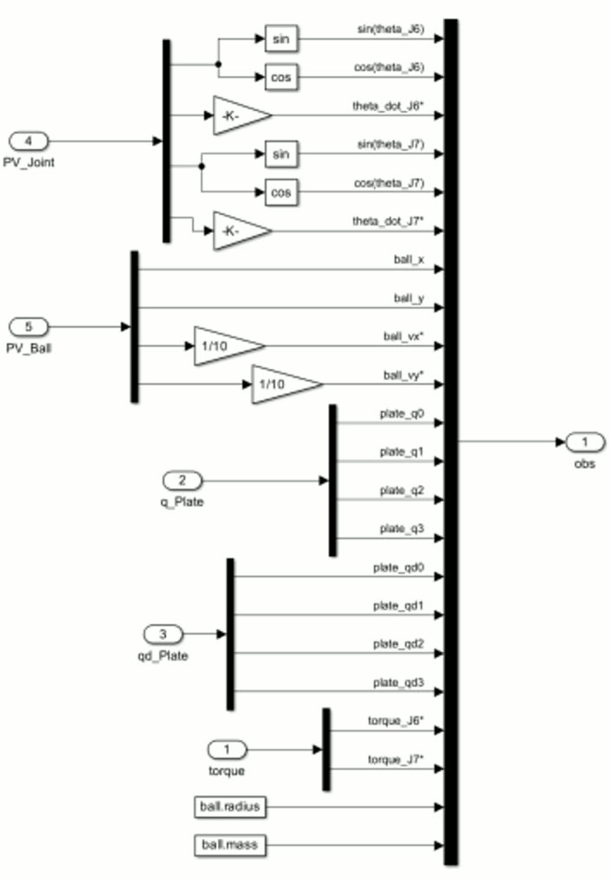
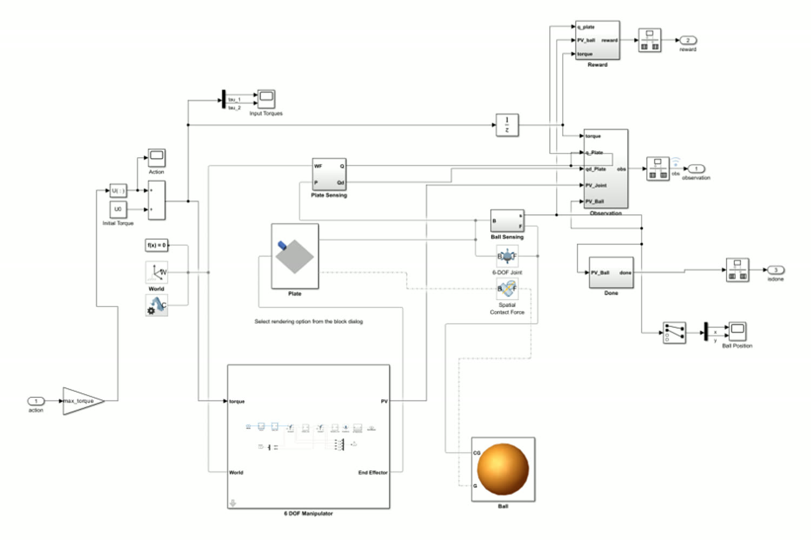
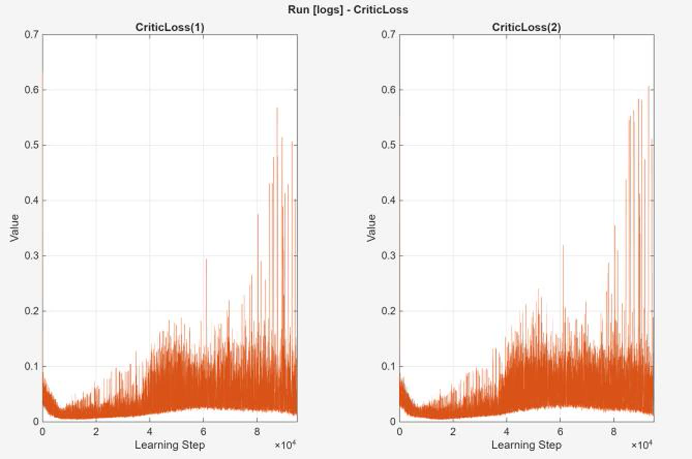
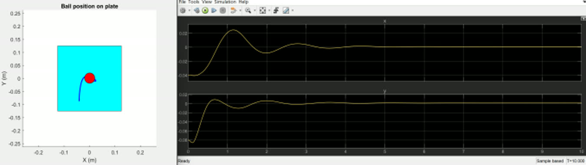

Teaching a Plate to Catch a Ball, Without Telling It How
Our team trained a Soft Actor-Critic agent to keep a rolling ball in the middle of a tilting plate. We gave it no model and tuned no gains. It only had torque on two joints and a reward to go on. The agent sees 22 numbers about the world, answers with two continuous torques, and learned against Simscape Multibody physics with real contact forces. The balancing isn't the interesting part. What's interesting is that after 6000 episodes it still won't settle on just one way to do it, and for SAC that means the algorithm is doing exactly what it was built to do.

Earn as much reward as you can, and stay as random as you can afford.
Ordinary RL tries to maximize expected reward. Soft Actor-Critic maximizes reward plus the entropy of its own policy, so it actually gets paid for keeping its options open. That one extra term gives the algorithm its whole personality. It pushes wide exploration early on, stops the agent from locking onto one mediocre strategy too soon, and ends with a stochastic policy instead of a fixed mapping from state to action.
the entropy bonus H, weighted by α, is what sets SAC apart from ordinary actor-critic
It fits this problem well. There are lots of valid ways to balance a ball on a plate, and searching through them with deterministic methods eats a lot of samples when the observations are this high-dimensional. SAC is off-policy, so it keeps every transition in a replay buffer and learns from it again instead of throwing it away after one gradient step. That sample efficiency is what makes the extra machinery worth it.
The key detail is that α isn't fixed. It tunes itself during training, steering the policy's entropy toward a target instead of locking the balance between exploring and exploiting in place. That "dynamic entropy tuning" is exactly what we set out to study.
Two critics, one Gaussian actor, and a tanh to keep it physical.
The agent is MATLAB's rlSACAgent with two Q-value critics. That's
the twin critic trick: the targets use the smaller of the two estimates,
which cuts down the overestimation a single Q network is known for. Target critics follow the
main critics slowly through a smoothing factor, and the actor updates less often than the
critics do.
The actor is a Gaussian policy with two outputs, one for the mean μθ(S) and one for the standard deviation σθ(S), with a ReLU on the second so it can't go negative. Actions are drawn from that unbounded distribution and then squeezed through tanh and a scale into the real torque limits. The order matters. Entropy is calculated on the unbounded Gaussian, while the environment gets the bounded action.


22 numbers that describe a ball on a plate.
The plant is a Simscape Multibody model with two cylindrical joints of zero length, J1 rolling about X and J2 pitching about Y, driven straight by the agent's torques. The ball's state comes from a 6-DoF joint block, and the contact between ball and plate is a real spatial contact force block rather than a scripted constraint, so the ball can roll, slip or even fly off. We kept it this simple on purpose, as a stand-in for a 6-DoF arm holding the plate.
Choosing what goes into the observation is where the careful thinking happened. Joint angles go in as sine and cosine pairs instead of raw angles, because a network that watches an angle jump from 2π back to 0 will think two almost identical poses are completely different. The plate's orientation uses quaternions for the same reason in 3D, so there are no gimbal singularities and no sudden jumps. The last joint torques are fed back in so the agent knows what it just did, and the ball's radius and mass are included so the policy learns with those constants in view instead of quietly memorizing them.



Three terms, and this is where all the difficulty lives.
The reward mixes one incentive with two penalties. The ball's position earns reward exponentially based on how close it is to the center. That keeps paying out for progress instead of only for success, which matters a lot when the agent starts out flailing at random. Tilting the plate costs the squared tilt angles taken from the quaternion, which stops the agent from cheating by throwing the plate around. And effort costs the squared torque, which nudges it toward using less energy.
| Term | Form | Purpose |
|---|---|---|
| Ball proximity | exponential in distance to center | steady reward for progress toward the goal |
| Plate orientation | −(squared tilt angles from quaternion) | discourage extreme plate attitudes |
| Control effort | −(squared joint torques) | energy efficiency, smoother actuation |
Our report is most upfront about this part: the only way to check a reward is to try it. An LQR cost has weights with units you can reason about, and the controller is provably optimal for them. A shaped reward has nothing like that. You train on it, look at what loophole the agent learned to exploit, and go again.
Three thousand episodes of failing on purpose.
We trained for 6000 episodes of up to 6000 steps each, checking the greedy policy every 100 episodes over 5 test episodes, with training set to stop at an average reward of 700. Using parallel workers on an RTX 4090, the run took about 3 hours and peaked at 660.48, close to the target but not quite there.
The shape of that curve is the real result. For about the first 3000 episodes the agent does basically nothing useful, and that isn't a bug. It's the entropy bonus being paid out. The agent is rewarded for trying lots of different ways to fail before it commits to anything. That does cost something real, though: on this problem SAC needs a lot more training time than deterministic methods.


The critic loss gets a lot of attention in our report, because it looks like failure and isn't. It spikes and never comes down. The critics keep running into states they haven't seen yet, and the entropy weight, tuned by Adam, keeps moving the target under them. Actor-critic training never promised a small critic loss. The critic's job is to give a useful gradient, not to fit perfectly. Reading that plot as "it isn't learning" is one of the classic mistakes people make with these methods.
The same start, and a different solution every time.
The trained agent balances the ball, and it does it differently each time, even from exactly the same starting point. From (x₀, y₀) = (0.05, 0.09) the ball takes a visibly different path to the center on separate runs. That isn't noise in the plant. It's the policy. A stochastic policy samples its actions, so a trained SAC agent is really a spread of strategies rather than a single one.
It handles other starting points too. (0.04, 0.08), (−0.09, −0.09) and (0.06, 0.09) all come back to the center, including the diagonal case where both axes need fixing at once. We expect the paths would tighten up with more training as the policy gets closer to optimal. Some of the variety is training that isn't finished yet, and some of it is the entropy term doing exactly what it's told.



When I wouldn't reach for this.
A ball on a plate is something PID or LQR can solve in an afternoon, with stability guarantees SAC can't give you. Spending three hours on a GPU for a controller that proves nothing isn't a trade anyone would make in production. The value of running the experiment was learning exactly why not.
| Cost | What it actually means here |
|---|---|
| Hyperparameter sensitivity | learning rates, entropy coefficient α, target update rate τ all need careful tuning |
| Sample complexity | about 3000 episodes before anything useful, and 6000 in total for a peak of 660.48 |
| Reward design | no way to check it on paper, so shape it, train, see what got exploited, and repeat |
| Compute | deep networks and a replay buffer, against a handful of gains in a classical controller |
What SAC gives back is something classical control can't. It learns a policy purely by trying things, for problems where there's no model or nobody knows what a good strategy looks like, and it comes back with several workable solutions instead of one. That choice makes it tougher. If one route gets blocked, a stochastic policy already knows others.
What I took away from it.
Adding entropy is a design choice, and you can see its effects. The 3000 flat episodes and the different paths from identical starts are the same mechanism seen from opposite ends, and you don't get the second without paying for the first. How you represent the problem is where your knowledge of it goes. Sine and cosine angles, quaternion orientation and feeding back the last torques aren't throwaway preprocessing. They decide whether the problem can be learned or is full of fake jumps. And a loss curve isn't a scoreboard. The critic loss never settled while the policy kept getting better, and understanding why is the difference between debugging a training run and misreading one.
A team project for EEE 587 Optimal Control (Team 10) at ASU, with thanks to Prof. Jennie Si. All figures and metrics come from our final report, linked above.